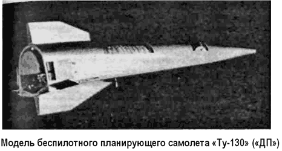

Ударный беспилотный планирующий самолет «Ту130»
В 1957–1958 годах в ОКБ Туполева начались ис следовательские работы по программе создания ударного планирующего самолета «ДП» («Дальний Планирующий»).
Самолет «ДП» представлял собой последнюю беспилотную планирующую ступень ракетной ударной системы. В качестве ракеты-носителя рассматривались модификации боевых баллистических ракет среднего радиуса действия типа «Р-5» и «Р-12», рассматривался и вариант ракеты-носителя разработки самого ОКБ.
Согласно эскизному проекту самолет «ДП» должен был выводиться ракетой на высоту 80-100 километров, далее вся система разворачивалась на 90° и происходило отделение планирующего самолета «ДП». После отделения производилась одноразовая коррекция траектории «ДП», а дальше аппарат летел к цели по планирующей траектории, определявшейся его аэродинамическим качеством и скоростью в момент отделения на данной высоте. «ДП» выходил на цель на расстоянии около 4000 километров от места старта, развивая при этом скорость в 10 Махов. На конечном этапе «ДП» переводился в пикирование на цель. По сигналу высотомера на заданной высоте производился подрыв термоядерного заряда.
В ходе полета по траектории коррекция производилась с помощью автономной системы управления и аэродинамических органов управления. На борту отсутствовала какая-либо силовая установка, питание систем должно было осуществляться от химических источников тока и от воздушной системы баллонного питания. Для поддержания определенной температуры систем оборудования и термоядерного заряда на борту имелась система охлаждения.
Преимуществом ударной системы «ДП» по сравнению с ракетными стратегическими системами первого поколения была более высокая точность вывода в район цели при более простой и, соответственно, менее сложной системе наведения, а также обеспечение сложной траектории полета к цели, что значительно затрудняло действия средств ПРО и ПВО.
В течение двух лет в ОКБ-156 шли интенсивные работы по проекту «ДП». К теме были подключены многие предприятия и организации ВПК, разрабатывались новые конструкционные материалы, технологии, удовлетворявшие требованиям длительного полета на гиперзвуковых скоростях в условиях кинетического нагрева. Совместно с ЦАГИ изучались вопросы получения требуемых аэродинамических характеристик.
Совместно с ЛИИ были отработаны вопросы, связанные с созданием натурных моделей и получением на них требуемых для «ДП» режимов полета.
В качестве первоначального практического осуществления теоретических наработок по проекту решено было построить несколько экспериментальных летательных аппаратов.
Так появился прототип системы «ДП» — самолет «130» («Ту-130»).
В ходе проектирования самолета «Ту-130» и поиска его оптимальной аэродинамической компоновки исследовались различные аэродинамические схемы самолета: «симметричная» и «несимметричная», «бесхвостка», «утка» и так далее.
Была построена целая серия моделей, которые прошли продувки в аэродинамических трубах ЦАГИ, в том числе и на больших сверхзвуковых скоростях. В ЛИИ были проведены натурные летные испытания со сбросом летающих моделей самолета «130», снабженных твердотопливными ускорителями, с летающей лаборатории «Ту-16ЛЛ». Модели были оборудованы датчиками и аппаратурой, позволявшими получать информацию о поведении аппарата и его аэродинамических характеристиках на различных режимах полета. Эти эксперименты дали информацию о поведении аппарата на скоростях, близких к 2 Махам. Также были проведены отстрелы моделей с помощью артиллерийских орудий и газодинамических пушек. Эти испытания позволили выйти на скорости, соответствующие 6 Махам.

В 1959 году, после проведения большого объема теоретических и экспериментальных работ по теме «ДП», в ОКБ Туполева приступили к рабочему проектированию самолета «Ту-130».
Согласно окончательному проекту самолет «Ту-130» представлял собой сравнительно небольшой летательный аппарат: длина — 8,8 метра, размах крыла — 2,8 метра и высота — 2,2 метра. Для «Ту-130» была выбрана аэродинамическая схема самолета-«бесхвостки». Он имел клинообразный фюзеляж полуэллиптического поперечного сечения с тупой носовой частью. Низкорасположенное треугольное крыло небольшой площади с углом стреловидности по передней кромке 75° имело по всему размаху элевоны. Вертикальное оперение самолета состояло из двух килей: верхнего и нижнего, расположенных в задней части фюзеляжа. На обеих половинах киля имелись тормозные щитки, открывавшиеся по схеме «ножниц», с приводом от автономной электрогидравлической системы. Профили крыла и органов управления выполнялись клинообразными.
Планер изготавливался из нержавеющей стали, носовая часть фюзеляжа и передние кромки крыла и килей — из графита.
Система управления включала в себя систему начальной коррекции траектории. Посадка самолета «Ту-130» должна была осуществляться по команде от программной системы управления, спуск на землю осуществлялся на парашюте с большой поверхностью купола, контейнер которого находился в его хвостовой части. Предварительно скорость гасилась за счет открытых тормозных щитков.
В опытном производстве была заложена серия из пяти экспериментальных самолетов «130», предназначенных для проведения различных испытаний. В ходе постройки натурные фрагменты планера, наиболее нагруженные в тепловом отношении, подвергались термическим испытаниям в специальных тепловых камерах, с учетом расчетных тепловых нагрузок.
В 1960 году первый планер самолета «Ту-130» был готов и начались работы по оснащению его необходимым оборудованием и стыковке с ракетой-носителем «Р-12». Однако, несмотря на явные успехи ОКБ-156, проект «ДП» был закрыт на основании постановления Совета Министров от 5 февраля 1960 года за № 138-48.
Полученные данные были использованы в следующей, близкой по назначению работе КБ — космоплане «136» («Звезда»).